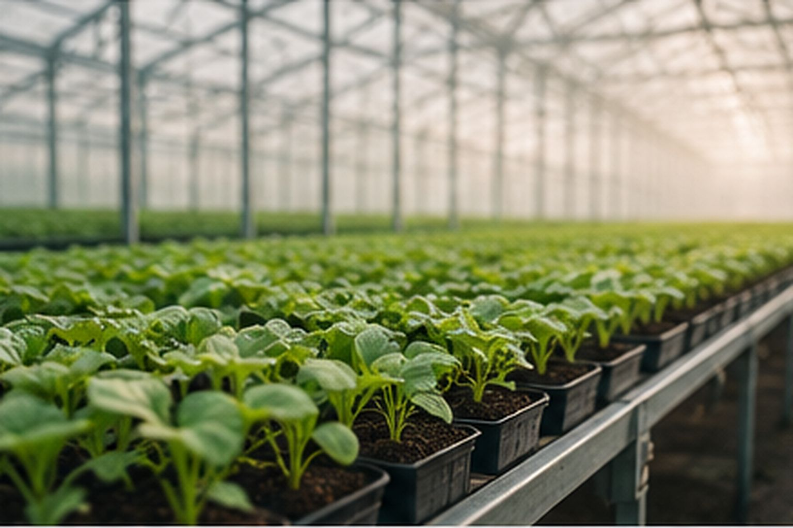
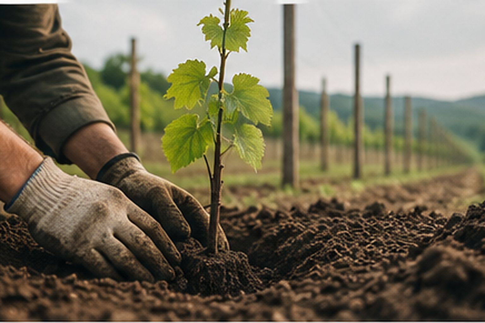
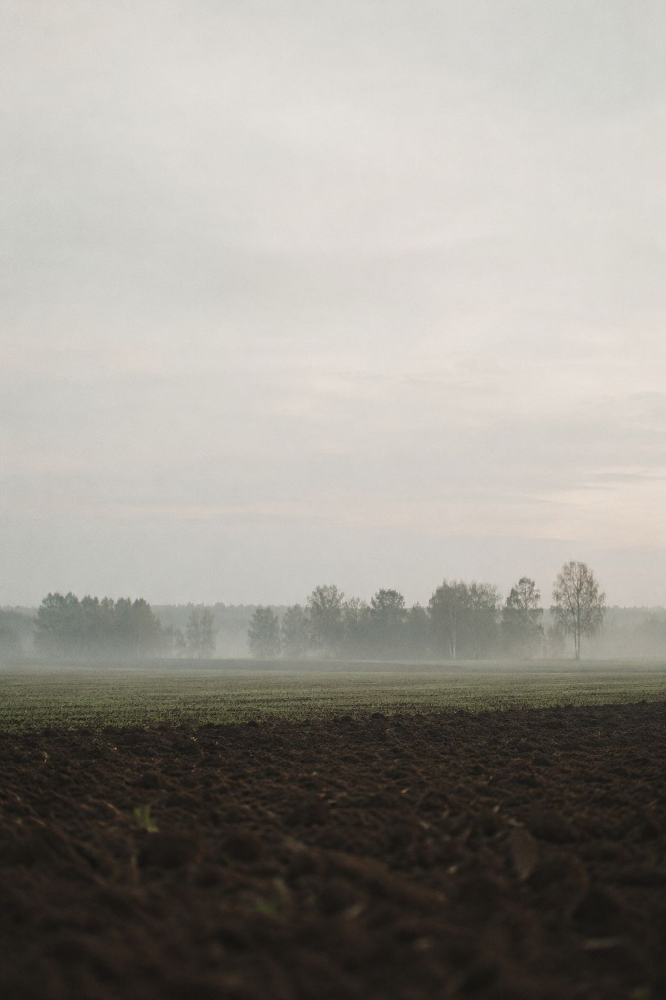

Where better
growth begins.

Worm humus for professional growing. Made in Latvia by Californian red worms, supplied across the EU.
It starts beneath the surface.
What a crop does above ground depends on the few centimetres it roots into. Worming makes one material for that layer.

Worm humus for professional growing
- The product
- Solid biohumus, also called vermicompost. One product, nothing else.
- How it's made
- Californian red worms process manure, vegetable matter and leaves.
- What you receive
- A dark, earth-like material with no smell.
- How it's sold
- By quote, delivered across the EU from Latvia.
Four ways growers use it.
Used in small amounts where crop value is high. Rates differ by crop and system, so each use has its own guidance.
-
Substrate producers
An organic component for peat-reduced growing media.

-
Greenhouses and young plants
Propagation and potting mixes for vegetables and ornamentals.

-
Orchards and vineyards
In the planting hole for new trees and vines.

-
Organic vegetable growers
Bed preparation and transplanting, in tunnels and in the field.


Every batch, on record.
The specification travels with the material. These are the values from our current product data sheet.
- pH (KCl)
- 7.3
- Organic matter
- min. 20.1%
- Total nitrogen (N)
- 0.9%
- Phosphorus (P₂O₅)
- 0.9%
- Potassium (K₂O)
- 0.7%
- Moisture
- To be confirmed
- Screened to
- To be confirmed
- Storage
- −30 °C to +40 °C
Made by SIA "Worming", Latvia. Protect from rain and direct sun.

Made in Latvia, from feed to big bag.
One site handles the whole process, so we know what went into every load.
Feedstock
Manure, vegetable matter and leaves.
Worm beds
Californian red worms process the material.
Maturation
The humus rests before harvest.
Screening
Sieved to an even, fine crumb.
Testing
Checked against the specification.
Packing
Filled and labelled for transport.
How supply works.
Start with a price, then test it on a small area before you commit.

Request a quote
Tell us your crop and volume. You get a price with delivery to your site.
Get a sample
We send material so you can see and test it yourself.
Run a trial
One bay, a few rows or one substrate batch, next to an untreated control.
Order and take delivery
Shipped from Latvia to anywhere in the EU.
Questions growers ask.
Why choose Worming biohumus?
Buy directly from the manufacturer at competitive prices. We control the entire production process, offer consistent quality and reliable bulk supply, and deliver across the EU. No unnecessary middlemen, just good value, flexible volumes and clear, responsive communication.
How is it different from compost?
Compost is broken down by microbes in a hot heap. Worm humus is organic matter that has passed through Californian red worms, which leaves a fine, earth-like material with no smell. Most growers use it in small amounts alongside compost, not instead of it.
Will it raise the salinity of my substrate?
It can at high mix rates. Check the EC of your final blend and start with a small trial batch before you change a recipe.
Can I use it in organic production?
Vermicompost is listed as an authorised soil conditioner in Annex II of Regulation (EU) 2021/1165. Confirm with your certifier for your own operation.
How is it delivered?
By quote, from Latvia to anywhere in the EU. Format, freight and lead time are confirmed in each quote.
